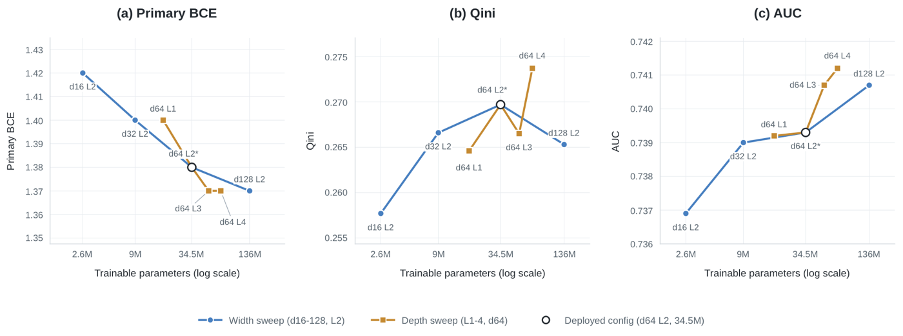

- Qini 0.1612 → 0.2697RCT データだけで学習しても、学習に使わなかった検証週の Qini は本番の PEPNet より高く、PCOC は 1.3737 から 1.0012 になって 1 に近づいた（Table 1）。
- 事業価値 +1.26%14 日間の A/B テスト。補助金率は 20.43% と 20.42% でほぼ同じだった。RCT データだけのモデルは +1.08% で、どちらの差も有意だった（Table 3）。
- P99 34 → 21 msリクエストを 1 回だけ符号化し、33 通りの割引の組み合わせをまとめて採点することで、500 QPS の負荷試験での遅延が 38% 短くなった。
クーポンの処置はカテゴリごとの割引の組み合わせで、ほかのカテゴリの割引も効果を左右する
対象は複数のサービスカテゴリを同時に提示するオンラインマーケットプレイスでのクーポン配布である。論文は守秘のため事業の詳細を伏せており、カテゴリの中身や事業価値の計算方法、絶対値は示していない。著者は全員 Didi Chuxing の所属である。
リクエストごとに、\(M\) 個のカテゴリそれぞれの割引の深さを選ぶ。処置は \(a=(a_1,\dots,a_M)\) というベクトルになり、注目する 1 つのカテゴリ（フォーカルカテゴリ）での取引の完了は、そのカテゴリの割引だけでなく、同時に出すほかのカテゴリの割引にも左右される。割引は共通の刻み幅 \(\Delta\) の格子から選び、価格の高いカテゴリほど割引を浅くするという業務ルールがある。
カテゴリは基本価格の高い順に番号をつけるので、実行可能な処置はすべて \(a_1<\cdots<a_M\) を満たす。この制約で組み合わせは減るが、\(|\mathcal A|\) はカテゴリ数と割引の段階数に対して組合せ的に増える。実験では \(M=2\) で、実行可能な組み合わせは 33 通りである。基準の処置 \(a_0\) は実行可能な中で最も浅い割引とされている。
モデルは 33 通りすべての完了確率を出し、補助金率に上限を置いた割当てに渡す
モデルが推定するのは、リクエストの特徴 \(x\) と処置 \(a\) のもとでのフォーカルカテゴリの完了確率 \(\mu(x,a)=\mathbb E[Y(a)\mid X=x]\) で、効果は基準との差 \(\tau(x;a,a_0)=\mu(x,a)-\mu(x,a_0)\) になる。観察データからの識別には、一致性、干渉なし、条件付き交換可能性（未交絡）、正値性を仮定する。
割当て側は予測した完了確率 \(\hat y(x_i,a)\) に完了時の期待事業価値を掛けて、事業価値 \(\hat r_{ia}\) を見積もる。\(c_{ia}\) を事業価値 1 単位あたりの補助金額とし、目標の補助金率を \(\rho\) として、リクエストごとに処置を 1 つ選ぶ。
制約は「期待補助金の総額が、事業価値の総額の \(\rho\) 倍以下」という意味である。乗数 \(\lambda\ge 0\) を固定したラグランジュ緩和はリクエストごとに分かれ、オンラインでは次の規則で処置を選ぶ。\(\lambda\) は、実際の補助金率が \(\rho\) に近くなるよう、過去のトラフィックでオフラインに調整する。
したがって、モデルと割当ての接点は、リクエストごとの 33 個の予測値 \(\{\hat y(x_i,a):a\in\mathcal A\}\) である。割当ては補助金の額を予測値の絶対値で見積もるので、論文は Qini のような順位の指標に加えて、予測の総和と実績の比（PCOC）でも評価している。
割引の成分ごとにトークンを作り、それをクエリにしてリクエストの特徴に交差注意をかける
リクエスト側では特徴量を 1 つずつトークンにして Transformer のエンコーダに通し、処置に依存しない表現 \(H(x)\in\mathbb R^{N\times d}\) を作る。特徴量のトークンは位置ごとに意味の決まった項目なので、フィードフォワード層の重みをトークンごとに別にしている（token-wise FFN）。
処置側では、カテゴリ \(j\) ごとに割引額の埋め込み表 \(e_j\) を持ち、\(T(a)=[e_1(a_1),\dots,e_M(a_M)]\in\mathbb R^{M\times d}\) とする。同じカテゴリに同じ割引を出す処置どうしは埋め込みを共有し、表がカテゴリごとに分かれているので、どの割引がどのカテゴリのものかも区別できる。従来の本番モデル（PEPNet）は成分の埋め込みを 1 本の処置ベクトルにまとめてからゲート付きの予測塔に入れており、成分ごとのクエリは持たない。
デコーダは処置トークンをクエリ、\(H(x)\) をキーとバリューとする交差注意を \(L\) 層重ねる。注意の重み \(P_h(x,a)\in\mathbb R^{M\times N}\) の各行は 1 つの割引の成分に対応し、その成分に関係する特徴を拾う。最後に、\(M\) 個の成分の出力をまとめて 2 層の MLP に通し、完了確率 \(\hat y(x,a)=\sigma(s(x,a))\) を出す。この読み出しを通して、フォーカルカテゴリの予測はほかのカテゴリの割引にも依存する。
![TaQFormer architecture. Center: embedding and dense features pass through a feature tokenizer and the Encoder Block to give request memory H(x); a Treatment Encoder turns M discrete discount dimensions into treatment tokens, which query H(x) in the Treatment Decoder; a focal-response readout (LayerNorm, vec, two-layer MLP) outputs y-hat(x,a), trained with BCE; an auxiliary head reads a pooled summary. Left: the pre-norm encoder block with multi-head self-attention and token-wise FFN. Right: the treatment decoder block with cross-attention (Q from treatment states, K and V from H(x)) and an FFN.](assets/fig1_architecture.png)
観察データで事前学習したモデルを凍結して残し、RCT データで LoRA 適応した枝とゲートで混ぜる
観察データ（OBS）は数千万件と多いが、過去の方策が処置を決めているため、リクエストと処置の組み合わせの偏りが大きい。RCT データは数百万件と少ないが、ランダムに割り当てた範囲では処置どうしを比べられる。論文の目的は OBS で学んだ表現を残しつつ、少ない RCT データで処置への反応の推定を適応させることである。
第 1 段ではモデル全体を OBS で 1 エポック学習する。第 2 段では、その学習済みモデルを凍結した参照経路としてそのまま残し、別に RCT 経路を作る。トークナイザと前半のエンコーダブロックは両経路で共有して 1 回だけ計算する。後半のブロックは凍結した重みのままと、LoRA（\(W'=W+(\eta/r)AB\)）で更新した重みとで 2 回計算する。RCT 経路には新しく初期化した予測部（処置トークンを含む）を付ける。
2 つの経路のロジットはリクエストと処置に応じて決まる重み \(\alpha(x,a)\) で混ぜる。
ゲート \(\alpha\) は小さな MLP で、RCT 側の表現の要約、RCT 側の処置トークン、2 つのロジットとその差の絶対値を、勾配を止めて受け取る。第 2 段で更新するのは LoRA の係数、RCT 側の予測部、ゲートだけで、RCT データで 1 エポック学習する。論文は、ゲートの重みは因果的な信頼度を較正した値ではないと断っている。
![Two-stage training. (a) Stage I trains all parameters on OBS logs with the primary loss plus auxiliary supervision and saves a checkpoint. (b) Stage II: a frozen tokenizer and encoder-block prefix (blocks 1-2) is evaluated once on the RCT stream; the encoder suffix runs twice, once frozen into the frozen OBS prediction stack giving s_obs, once with trainable LoRA into a new trainable RCT prediction stack giving s_rct; a gate MLP outputs alpha, and the fused logit alpha s_obs + (1-alpha) s_rct is trained with the focal RCT loss.](assets/fig2_twostage.png)
本番の推論では、リクエストを 1 回だけ符号化して \(H(x)\) を作り、33 通りの処置トークンとの組を 1 つのバッチにまとめてデコーダに通す。1 リクエストあたりの計算量は \(|\mathcal A|(C_{\mathrm{enc}}+C_{\mathrm{dec}})\) から \(C_{\mathrm{enc}}+|\mathcal A|\,C_{\mathrm{dec}}\) に減る。
RCT データだけで学習しても、本番モデルより Qini が高く、予測の総和も実績に近かった
オフライン評価には学習に使わなかった 1 週間分の RCT データを使う。Qini は、基準 \(a_0\) 以外の 32 通りの処置それぞれについて、その処置と \(a_0\) を割り当てられたリクエストを予測した効果の順に並べて計算し、32 通りで平均したものである。AUC は割り当てられた処置のもとで完了を予測する精度で、PCOC は予測確率の総和と実際の完了数の比（1 に近いほどよい）である。構造の比較では、どのモデルも同じ RCT データで 1 エポック学習している。
このページの数値は arXiv v1（2026 年 10 月 19 日）の本文と表による。査読付きの出版版は確認できなかった。事業価値は守秘のため相対値だけが示されている。
本番の PEPNet と比べると、TaQFormer は Qini を 0.1612 から 0.2697 に、AUC を 0.6776 から 0.7393 に上げ、PCOC を 1.3737 から 1.0012 に下げた。関連手法を本番向けに改変した EFIN（Qini 0.2129）と TransTEE（0.2612）と比べても、3 つの指標すべてで点推定が最もよかった。TransTEE との差は小さい。
部品を入れ替えると、エンコーダを平坦な MLP にした場合は Qini 0.2592・PCOC 1.1395、デコーダを PEPNet 風のゲート付き予測塔にした場合は Qini 0.2536 となり、どちらも下がった。ただし後者は本番の補助損失も残しているので、デコーダだけの効果を切り分けた比較ではないと論文は注記している。エンコーダを Wukong や UniMixer に替えてもデコーダは機能し、UniMixer の行は Qini 0.2700 と TaQFormer の 0.2697 をわずかに上回る（論文の表では、エンコーダの差し替えは太字の対象外としている）。
モデルの幅と深さを 2.6M から 136M パラメータまで変えた比較（論文 Fig. 3）では、検証の BCE が下がっても Qini は一貫しては上がらなかった。幅 128（136M）の Qini は 0.2653 で、幅 32（9M）の 0.2666 を下回った。論文は、BCE が低いことだけでは効果の順位づけが最もよいモデルを選べないと結論し、34.5M の構成を採用している。

観察データを足すだけでは Qini は上がらず、凍結した参照と LoRA とゲートを組み合わせた構成が最も高かった
同じ検証週で学習の仕方を比べると（論文 Table 2）、OBS だけで学習した Qini は 0.2548 で、RCT だけ（0.2697）より低かった。OBS と RCT を混ぜて学習すると 0.2665、OBS で事前学習してから全パラメータを RCT で微調整すると 0.2673 で、どちらも RCT だけの場合を下回った。論文はここから、OBS データを加えれば効果の順位づけが自動的によくなるわけではないと述べている。
提案の構成（凍結した参照＋LoRA＋ゲート）は Qini 0.2706、AUC 0.7454 で、比べた学習方法の中で最も高かった。全パラメータの微調整より両指標とも 0.0033 高く、PCOC は 1.0114 から 1.0027 になって 1 に近づいた。PCOC が最も 1 に近いのは RCT だけの学習（1.0012）である。ゲートを単純な足し算 \(s^{\mathrm{obs}}+s^{\mathrm{rct}}\) に替えると Qini は 0.2686 に、LoRA を後半ブロックの全パラメータ更新に替えると 0.2700 に下がった。
論文は、これらの比較は 1 つのシードによるもので、複数シードでの不確かさは評価していないと断っている。また、全パラメータの微調整との比較は構成全体を評価したもので、個々の部品の寄与を切り分けたものではないとしている。
14 日間の A/B テストで、補助金率をほぼそろえたまま利用者あたりの事業価値が 1.26% 増えた
利用者 ID のハッシュで 3 群に分け、各群にトラフィックの 5%（各群数百万人規模）を割り当てた。対照群は本番の PEPNet、処置群の一方は RCT データだけで学習した 1 段階のモデル、もう一方は 2 段階の TaQFormer である。3 群とも同じ割当て器と同じ補助金率の目標を使い、実際の補助金率は 20.43%、20.45%、20.42% だった。
利用者あたりの事業価値は、PEPNet を 100 とすると、RCT だけのモデルで 101.08、2 段階モデルで 101.26 だった。CUPED で補正した 2 標本 \(t\) 検定で、3 つの対比較はすべて有意（\(p<0.05\)）である。2 段階モデルは RCT だけのモデルより約 0.178% 高い。その後、2 段階モデルは全トラフィックに展開され、2026 年 10 月の時点で数か月運用されている。
推論の遅延は、NVIDIA RTX 6000D、バッチサイズ 256、500 QPS で 10 分間の負荷試験で測った。処置ごとにエンコーダを計算し直す元の実装と比べ、P99 の遅延は 2 段階モデルで 34 ms から 21 ms に、RCT だけのモデルで 29 ms から 18 ms に短くなった。
補助金率の上限のもとで、多次元の割引の組み合わせを選ぶための完了確率を推定する
- 推定するもの：フォーカルカテゴリでの取引の完了確率 \(\hat y(x,a)\) を、実行可能な処置すべてについて推定する。効果は基準 \(a_0\) との差として評価する。事業価値は予測値に完了時の期待価値を掛けて割当て側で求め、その換算方法は公開していない。
- コストの扱い：モデルはコストを推定しない。割当て側が事業価値 1 単位あたりの補助金額 \(c_{ia}\) を与え、期待補助金を \(c_{ia}\hat r_{ia}\) と見積もる。コストは完了したときの事業価値に比例する形で、予測した完了確率を通して決まる。
- 処置の種類：カテゴリごとの割引の深さを並べたベクトル（実験では \(M=2\)、実行可能な組み合わせは 33 通り）。割引の大小関係に業務上の制約がある。
- 予算制約：補助金の総額ではなく、補助金率（補助金 ÷ 事業価値）に上限 \(\rho\) を置く。リクエストごとに処置を 1 つ選ぶ 0-1 の問題を書き、乗数 \(\lambda\) を固定したラグランジュ緩和で解く。\(\lambda\) は過去のトラフィックで調整し、A/B テストの 3 群は同じ割当て器と目標を共有している。論文の主題は予測モデルで、割当て器そのものの改良は扱っていない。
- データ：数千万件の観察データと数百万件の RCT データ（いずれも対象のマーケットプレイスのログ）。観察データの識別には未交絡と正値性を仮定し、RCT での適応はその仮定への依存を減らすためのものと位置づけている。
ROI 順の割当てとの関係（解説者の注）：オンラインの規則 \(\hat r_{ia}(1-\lambda(c_{ia}-\rho))\) は、\(\lambda' = \lambda/(1+\lambda\rho)\) とおけば、定数倍を除いて「事業価値 \(-\ \lambda'\times\) 期待補助金」の最大化と同じである。リクエストごとに選択肢から 1 つ選ぶ多選択ナップザック問題の連続緩和を、乗数で解く形にあたる。処置が二値なら、事業価値の増分 ÷ 補助金の増分が \(1/\lambda'\) を超える人に配る ROI のしきい値になる。ただし制約が総額ではなく補助金率なので、予算が固定されているわけではなく、事業価値が増えれば使える補助金も増える。論文自身はこの規則を ROI の順位づけとしては説明していない。
@misc{li2026taqformer,
title = {TaQFormer: A Treatment-as-Query Transformer with Data-Fusion for Multidimensional Treatment Modeling in Coupon Allocation},
author = {Li, Jiahong and Yang, Zeqin and Xiang, Yu and Jiang, Zhifan and Ma, Jingqi and Hua, Enzheng and Xu, Jixing and Wu, Jun and Wang, Fei and Yu, Enyun and Guo, Jiecheng},
year = {2026},
eprint = {2610.26199},
archivePrefix = {arXiv},
primaryClass = {cs.LG},
doi = {10.48550/arXiv.2610.26199}
}